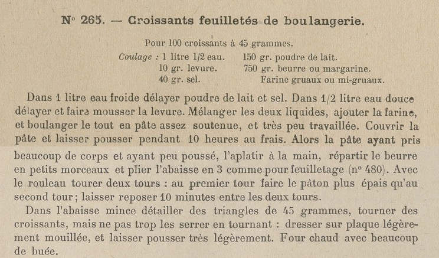
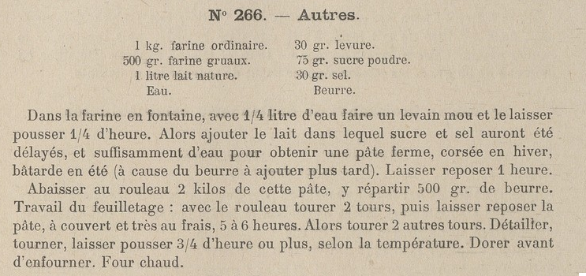
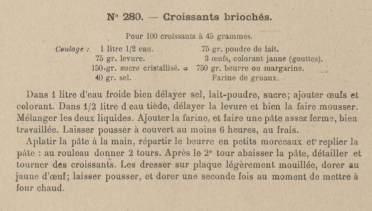
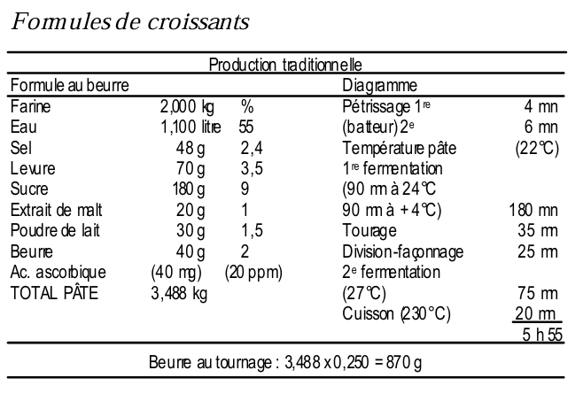

Le Croissant
L'histoire du croissant
Si le croissant est aujourd’hui le symbole du petit déjeuner français, ses racines viennent en réalité… de Vienne ! Dans Le goût du pain, Raymond Calvel consacre un chapitre à cette viennoiserie devenue culte.
Tout commence en 1683, lors du siège de Vienne par les Turcs. La légende raconte que des boulangers, travaillant de nuit, auraient entendu des bruits suspects sous la ville. Ils alertent les défenseurs, sauvant ainsi la cité. Pour célébrer la victoire, ils créent un petit pain en forme de croissant de lune, emblème de l’Empire ottoman. Le croissant était né.
Un siècle plus tard, il traverse les frontières. Marie-Antoinette, originaire d’Autriche, aurait introduit ce pain viennois à la cour de Versailles. Mais c’est surtout au XIXᵉ siècle que le croissant s’impose vraiment à Paris. L’Exposition universelle de 1889 joue un rôle clé : des ouvriers viennois y présentent leurs spécialités, donnant naissance au terme viennoiserie pour désigner brioches, pains au lait… et croissants.
À cette époque, le croissant n’est pas encore feuilleté. Il s’agit d’une pâte levée sucrée, plus proche d’un petit pain brioché. Ce sont les boulangers parisiens, dans les années 1920, qui ont l’idée d’y appliquer les techniques de feuilletage. Résultat : un produit plus léger, croustillant et aérien, bien différent du kipferl viennois. Le croissant feuilleté, tel qu’on le connaît aujourd’hui, est donc une invention bien française !
Raymond Calvel souligne que ce mariage entre fermentation et feuilletage est une avancée technique majeure : il allie la saveur d’une pâte levée à la finesse des couches beurrées. Mais il rappelle aussi une évidence : un croissant ne peut être réussi qu’avec de bonnes matières premières et un savoir-faire attentif.
Ainsi, derrière ce symbole du petit déjeuner, se cache une histoire faite de voyages, d’innovations et de transmission. Le croissant que nous savourons chaque matin est autant autrichien par ses origines… que français par son perfectionnement.
Source: Le Goût du Pain - Raymond Calvel
Le croissant des années 1930
Quand on parle du croissant, on pense tout de suite à une viennoiserie beurrée, dorée et généreuse. Pourtant, le croissant n’a pas toujours eu l’allure et le goût qu’on lui connaît aujourd’hui. L’étude menée par Berry Farah et Anissa Mande permet de redécouvrir le croissant tel qu’il était fabriqué dans les années 1930.
Un croissant plus léger et plus simple
Dans les années 1930, le croissant parisien typique pèse environ 45 grammes (contre 80 g en moyenne aujourd’hui). Il est façonné à partir de farine de gruau, réputée pour sa grande extensibilité, d’un peu de levure, de lait en poudre, d’eau, de sel, et d’environ 30 % de beurre. Le sucre est quasiment absent, et la recette ne cherche pas à alourdir la pâte en matières grasses.
La pâte est peu pétrie, car le laminage fait déjà le travail d’élasticité. Elle repose longuement « au frais » (autour de 12–15 °C, les réfrigérateurs étant rares à l’époque) avant d’être tourée et façonnée. L’apprêt reste court, et les croissants sont enfournés dans un four chaud avec beaucoup de buée. Résultat : un produit feuilleté mais délicat, où la fermentation et la légèreté priment sur la richesse en beurre et en sucre.
Une autre philosophie de la viennoiserie
Le croissant des années 1930 n’est pas seulement plus petit : il est pensé différemment. La saveur vient surtout de la fermentation, comme pour le pain, et non de l’ajout massif de matières grasses ou de sucre. Les boulangers proposaient plusieurs variantes : croissants semi-feuilletés, croissants ordinaires, ou croissants de pâtissier proches d’une brioche feuilletée. Mais tous partageaient cette volonté de rester digestes, parfumés, et adaptés à une consommation quotidienne au petit déjeuner.
Ce qui a changé après-guerre
La Seconde Guerre mondiale bouleverse les habitudes. Un décret interdit la production des pains de fantaisie (dont le croissant) et fait disparaître la farine de gruau. Au retour, dans les années 1950, les boulangers doivent composer avec des farines plus tenaces et moins extensibles. Pour compenser, ils ajoutent plus de sucre, de sel et de beurre. Peu à peu, le croissant change de visage : plus riche, plus lourd, plus volumineux.
Source: Étude Historique et Technologique du croissant des années 1930 - Berry Farah & Anissa Mande
Matières Premières
La qualité des matières premières ne doit pas être négligée lorsqu'on souhaite faire un croissant d'une qualité exceptionnelle. Lorsqu'on demande à Christophe Vasseur, artisan-boulanger et créateur de la boulangerie Du Pain et des Idées, qu'est-ce qui fait que son croissant est le meilleur, il répond:
"Le choix des matières premières et le temps. Si je veux sortir quelque chose qui, au goût, va être exceptionnelle, il n'y a pas de mystère : il faut que les ingrédients soient exceptionnels. De très bons oeufs, une très belle farine, du lait bien riche et goûteux et bien évidemment, le plus important, le beurre puisque c'est pratiquement un tiers de la recette, extrêmement goûteux, très savoureux".
Dans une vidéo sur les croissants (aujourd’hui hors ligne), Bruno Albouze racontait qu’un jour, il avait demandé à son maître d’apprentissage ce qui faisait la qualité d’un croissant authentique. La réponse était simple : la seule chose qui comptait vraiment était la qualité du beurre.
Les ingrédients du croissant
Farine
- Farine de blé de force.
- Assure élasticité, extensibilité, tenue du réseau glutineux et développement du feuilletage.
Eau
- Hydrate la farine et favorise la formation du gluten.
- Participe à la consistance de la pâte et crée le milieu de fermentation.
- Sa dureté et sa composition minérale influencent la fermentation et la texture.
Levure
- Responsable de la fermentation, du volume et de l’alvéolage.
- Osmotolérante dans les pâtes sucrées (>10%).
Sel
- Renforce la pâte et régule la fermentation.
- Rehausse le goût, améliore la conservation et favorise la coloration de la croûte.
Sucre
- Nourrit la levure et régule la fermentation.
- Apporte douceur et favorise la caramélisation en cuisson.
- Améliore le moelleux, la conservation et rehausse le goût.
- Réduit la ténacité du gluten, rendant la pâte plus souple et extensible.
Beurre
- Ingrédient essentiel du feuilletage.
- Double usage :
- Dans la pâte pour l’assouplir (améliore l'extensibilité).
- Au tourage pour créer les couches feuilletées.
- Présente une bonne plasticité.
- Possède une humidité de 15% ou moins.
- Sa qualité influence fortement le goût final.
Lait (facultatif)
- Apporte moelleux, arômes lactés et coloration de la croûte.
- Peut être frais ou en poudre pour plus de régularité.
Oeufs (facultatif)
- Apportent goût, couleur et souplesse à la pâte.
- Utilisés surtout dans des versions plus riches.
Malt (facultatif)
- Améliore la fermentation et la coloration de la croûte.
Levure inactive (facultatif)
- Favorise l'extensibilité de la pâte
Recettes
Croissant des années 1930
Voici quelques recettes provenant du livre La Boulangerie d'Aujourd'hui de Félix Urbain-Dubois:



Croissant de Raymond Calvel
Voici un extrait sur les croissants provenant du livre Le goût du Pain de Raymond Calvel:

La formule et le diagramme de fabrication
Pour 1 kg de farine, la formule comprend, en gros: 20 à 24g de sel, 30 à 40g de levure fraîche, 80 à 120g de sucre, 20g de poudre de lait, 30 à 40g de matières grasses, 10g d'extrait de malt sec ou sirupeux, 540g d'eau, 1 oeuf éventuellement, et 430g de beurre ou de margarine pour effectuer le feuilletage.
La présence de 3 à 4% de corps gras incorporé au pétrissage, améliore l'extensibilité de la pâte et facilite tourage et façonnage. De même, la présence d'un oeuf (5 % par rapport à la farine) tend à améliorer les propriétés plastiques de la pâte et le goût du croissant.
La catégorie du corps gras utilisé au tourage peut, pour le sel et le sucre, entraîner des adaptations de dosage. Il est judicieux, avec le beurre, de saler à 24g au kg de farine et seulement à 20g avec la margarine qui, elle, est légèrement salée.
Pour le sucre, en présence de beurre, doser à 80-100g afin que le goût de sucré ne contrarie pas la diffusion des arômes dont il est porteur; en revanche, avec la margarine, doser à 100-120g pour améliorer la saveur du produit.
Le pétrissage de la pâte
Dans les débuts de la production du croissant feuilleté, la pâte bénéficiait d'une première fermentation qui se prolongeait, souvent, 6-7 heures durant et, celle-ci, pour partie, assurait le développement de la pâte que le tourage venait compléter. Aussi, pratiquement, le pétrissage n'allait-il pas au-delà d'un bon frasage.
Aujourd'hui, la première fermentation se déroule différemment et, souvent, la pâte, logée au froid. De ce fait, et la présence d'un peu d'acide ascorbique aidant, le degré de la première fermentation a fortement régressé et le développement de la pâte, durant cette période a, lui aussi, notablement diminué.
Il est nécessaire, au niveau du pétrissage de la pâte, d'en tenir compte et d'en augmenter, légèrement, la durée : plus le degré de la première fermentation de la pâte sera réduit, et plus le degré du pétrissage gagnera à s'élever. Ainsi, à l'heure actuelle, et sans être excessif, le pétrissage d'une pâte à croissants gagne à se poursuivre au-delà du frasage.
La première fermentation, le tourage, le façonnage et l'apprêt
Une première fermentation appropriée est inséparable de la production d'un croissant de qualité. Ou, elle doit être largement prévue ou, il est nécessaire d'enrichir la pâte, au pétrissage, avec l'apport d'une importante culture de ferments pour que, dans les deux cas, la pâte, avant le tourage, soit bien pourvue en acides organiques1.
Qu'est-ce qu'un bon croissant?
Selon Bruno Albouze, formé à l’École Lenôtre et ancien chef boulanger du Plaza Athénée aux côtés d’Alain Ducasse :
Un croissant réussi est un croissant qui aura en premier un protocol de fabrication précis, il ne devrait pas être trop croustillant, ce n'est pas de la pâte feuilletée, mais plutôt de la pâte levée feuilletée, et ça, c'est une affaire de boulanger. Un bon croissant doit donner du moelleux en bouche, enveloppé de feuillets délicats.
Les meilleurs croissants sont les plus simples. Moi j'ai appris à faire les croissants, ou plutôt à les perfectionner, dans les années 90 à Bordeaux, rue de la Boétie, tenu par un maître-boulanger compagnon du tour de France et meilleur ouvrier de France [...] avec un savoir comme j'en ai rarement été témoin. Ses croissants faisaient l'unanimités, les plus beaux et les meilleurs et c'est lui qui m'a dit que ce qui donne le goût du croissant, c'est le beurre, et rien d'autre. Parole de sage.
Pour ma part, si je reconnais l'importance de la qualité du beurre, je crois aussi que la détrempe doit savoir le mettre en valeur. J'ai goûté des croissants réalisés avec le même beurre dans deux boulangeries différentes et leur saveur était pourtant très différente. Selon moi, le sucre et le sel jouent également un rôle clé. En tant qu'exhausteurs de goût, ils nécessitent un équilibre subtil pour révéler pleinement le potentiel du croissant.
Ce lien entre sucre, sel et matière grasse a d'ailleurs été mis en lumière par Berry Farah et Anissa Mande, qui citent le psychophysicien américain Howard Moskowitz :
"Il existe une conjonction entre le sucre, le sel et la matière grasse qui fait que lorsqu’on atteint cette harmonie, le produit devient extrêmement bon."
Leur étude rappelle aussi que "si le beurre contribue à la saveur, il n'est pas le garant de la qualité du croissant. [...] Le croissant, c'est d’abord et avant tout une pâte fermentée, ce que beaucoup ont oublié. Ce dont on s'attend d'une pâte fermentée, c'est une richesse de saveur, une rondeur."
Enfin, encore faut-il soigner la cuisson du croissant : il suffit qu’il soit un peu trop cuit pour perdre les arômes complexes et lactiques qui font toute sa richesse.
Selon le chef pâtissier Christophe Felder, il y a "cinquante paramètres à maîtriser pour faire un bon croissant": "la qualité de la farine et du beurre utilisée, [...] le temps de fermentation de la pâte, la façon d'incorporer le beurre, de façonner le croissant, la chaleur du four, la durée de cuisson, ..."
Selon les concours du meilleur croissant, les jurés les évaluent en tenant compte de plusieurs éléments :
- La cuisson
- La forme, l’aspect visuel et la régularité
- La saveur et le parfum
- La texture, le fondant et le feuilletage
En conclusion, pour reprendre une expression dans le monde du pain : "Un bon pain, c’est celui qu’on aime". Cela vaut tout autant pour le croissant : c’est avant tout une question de goût personnel. Certains le préféreront avec de la mâche, tandis que d’autres le préféreront aérien et délicat. Certains l’aimeront tout juste sorti du four, d’autres après quelques heures.
Notes
1 Des croissants obtenus avec une pâte riche en acides organiques bénéficient d'une excellente saveur et d'une très bonne conservation, les acides organiques étant porteurs d'arômes.
Références
Livres
- Le Goût du Pain - Raymond Calvel
- Étude Historique du croissant des années 1930 - Berry Farah & Anissa Mande
- La Boulangerie d'Aujourd'hui - Felix Urbain-Dubois
- Les Pains et Viennoiseries - École Lenôtre
- Baking Artisan Pastries and Breads - Ciril Hitz
- Pâtisserie! : l'ultime référence - Christophe Felder
- Advanced Bread and Pastry - Michel Suas
- La Boulangerie - Frédéric Lalos
- Le grand livre de la boulangerie et de la viennoiserie - Jean-Marie Lanio et al.
- Viennoiserie, Leçons en pas à pas - Cyrille Van der Stuyft
- The Art of Lamination: Advanced Technical Laminated Pastry Production - Jimmy Griffin
- The Art of Lamination II : Mastering the Art and Craft of Laminated Pastry - Jimmy Griffin
Vidéos
- Reconversion : un boulanger qui s'affranchit des codes
- Les secrets d'une bonne viennoiserie
- The French Touch - Taste the world’s best croissant
- Façonner les croissants
- Pâte levée feuilletée par l'académie de Versailles
- Croissant Masterclass with Scott Megee
- My (Part-Time) Paris Life: Episode One
Blogs
- What goes into making an authentic, quality croissant?
- Meet Christophe Vasseur, Creator of the Best Croissants in Paris
- Classic French Croissant Recipe
- Vous allez faire un bon et beau croissant!
- Six pièges à éviter pour réussir ses croissants
- Understanding the Lamination Layer Calculation Process
- La Viennoiserie - Généralités
- When less is more: Why fewer folds make a better croissant